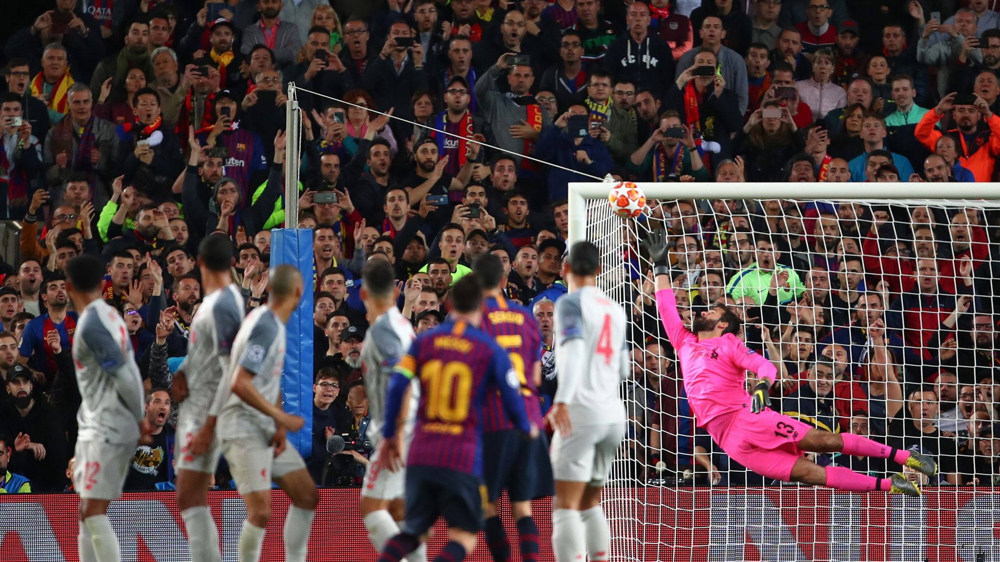

Fußball? Was ist Fußball übrhaupt?
Fußball ist eine Ballsportart, bei der zwei Mannschaften mit dem Ziel gegeneinander antreten, mehr Tore als der Gegner zu erzielen und so das Spiel zu gewinnen. Die Spielzeit ist üblicherweise zweimal 45 Minuten, zuzüglich Nachspielzeit sowie gegebenenfalls Verlängerung und/oder Elfmeterschießen. Eine Mannschaft besteht in der Regel aus elf Spielern, von denen einer der Torwart ist. Der Ball darf mit dem ganzen Körper gespielt werden mit Ausnahme der Arme und Hände; vorwiegend wird er mit dem Fuß getreten. Nur der Torwart (innerhalb des eigenen Strafraums ) – bzw. die Feldspieler beim Einwurf – dürfen den Ball mit den Händen berühren. Der Erfolg des Fußballs beruht zum Ersten auf seiner Einfachheit. Der Aufwand für Mittel und Ausrüstung ist relativ gering ( z. B. Straßenfußballs ), wodurch er auch in vielen Entwicklungsländern sehr populär wurde, und er ist für Neulinge und Zuschauer leicht verständlich. Zum Zweiten fallen im Vergleich zu anderen Ballsportarten relativ wenig Tore, weshalb eine einzige Szene, eine (Fehl-)Entscheidung des Schiedsrichters oder auch Glück ein Spiel entscheiden können, was die Chancen für Außenseiter erhöht. Die Einfachheit wurde jedoch in neuerer Zeit entgegengewirkt, mit immer komplizierteren Regularien (u. a. Änderung der Abseitsregel ) und im Spitzenfußball mit immer größerem technischen Aufwand (Videobeweiß), der zu einem „gerechteren“ Fußball führen soll, aber den Spielfluss einschränkt. Fußball entstand in der zweiten Hälfte des 19. Jahrhunderts in Großbritannien und breitete sich ab den 1880er und 1890er Jahren in Kontinentaleuropa und anderen Kontinenten aus. Er gilt als weltweit beliebteste Mannschaftssportart. Im Gegensatz zu anderen, auf kleineren Feldern gespielten Sportarten wie z. B. Hallenhandball, konnte mit Fußball das große Feld innerhalb von Leichtathletikanlagen attraktiv bespielt werden. Diese „Kampfbahnen“ waren infolge von Turnbewegung und Wiederbelebung der antiken Olympischen Spiele vorhanden, es konnten regelmäßig sehr große Zuschauermengen angezogen und untergebracht werden, mit entsprechenden Einnahmen. Daher entwickelten sich Spitzenklubs und professioneller Mannschaftssport insbesondere in großen Städten und Metropolen weltweit im Fußball, in den USA dagegen im Baseball und American Football. Die Popularität stieg zwischen den Weltkriegen mit Radioübertragungen, später mit Fernsehberichten.
Frühere From des Spiels
Im zweiten Jahrtausend v. Chr. wurde in China ein fußballähnliches Spiel namens Cuju (Ts’u-chü) („cu“ = mit dem Fuß stoßen; „ju“ = Ball) ausgetragen. Über die damaligen Regeln des Spiels ist nichts bekannt. Jedoch gilt als sicher, dass es als militärisches Ausbildungsprogramm zum Training der Soldaten durchgeführt wurde. Während der Zhou-Dynastie breitete sich das Sportspiel auch im Volk aus, und man versuchte, durch Regeln Gewalt und Ruppigkeit einzugrenzen. Der Ball war aus Lederstücken zusammengenäht und mit Federn und Tierhaaren ausgestopft. In der Quin- bis zur Sui-Dynastie wurde das Fußballspiel immer beliebter. Zwischen den Jahren 220 und 680 wurden der luftgefüllte Ball erfunden und erstmals Fußballregeln (Tore, Torhüter und Spielführer) festgehalten. Etwa 100 Jahre später geriet das Spiel jedoch wieder in Vergessenheit. Aus dem Kulturkreis des antiken Griechenland sind Abbildungen von Ballspielen auf Reliefs und Vasen erhalten, vornehmlich aus Sparta, wo die Körperertüchtigung einen hohen Stellenwert hatte. Auch die Römer der Antike kannten Ballsportarten, die wie das chinesische Cuju u. a. in einem militärischen Kontext gespielt wurden. Der türkische Gelehrte Mahmud al-Kāschgharī beschreibt in seinem Buch dīwān lughāt at-turk, dass im 11. Jahrhundert unter den im mittelasiatischen Raum lebenden Turkvölkern ein Spiel namens Tepük (alttürkisch für: Tritt bzw. Fußtritt) große Beliebtheit genoss.Im Frühmittelalter wurde in England eine frühe Art des heutigen Fußballspiels praktiziert, bei der Bewohner zweier Ortschaften versuchten, einen Ball durch das gegnerische Stadttor zu befördern. Das „Spielfeld“ lag immer zwischen zwei Orten, selbst wenn diese mehrere Kilometer auseinanderlagen. Mit der Entdeckung Amerikas kamen die Europäer mit den alten Ballspielen Mittelamerikas in Berührung, die eine lange Tradition über verschiedene Kulturen besaßen, teilweise eine religiöse oder gerichtliche Funktion hatten und in befestigten Stadien ausgetragen wurden. Auch wenn England als das „Mutterland des Fußballs“ gilt, so gab es auch in Frankreich und Italien schon mit dem Treibballspiel verwandte Kampfspiele. Seit dem 15. Jahrhundert wird in Florenz der Calcio Storico praktiziert, eine Art Fußballspiel, bei dem es recht rüde zugehen kann. Scaino schrieb 1555:„Dem Läufer, der mit dem Ball in der Hand das Feld durchläuft, sollen irgendwelche Kräftigen Platz schaffen, damit ihr Mann ungehindert freien Durchgang habe. Sieht er sich aber von einer großen Schar angegriffen, so soll er im Lauf nachlassen und … den Ball stoßen, und zwar wird er das schneller mit dem Stoße des Fußes als in anderer Weise können, da ein Stoß in dieser Weise sicherer ist.“ Scaino legte aber auch die Platzgröße fest (der Kirchplatz vor Santa Croce (Florenz) = ca. 100 × 50 m), bestimmte, dass Tore entscheiden (und nicht das schöne Spiel oder das besonders schöne Outfit) und dass das Spiel vom normalen Leben ausgegrenzt ist (Unterstellungsverhältnisse des realen Lebens gelten nicht auf dem Platz, d. h. der Herr kann dem Diener nicht befehlen, ihm den Ball zu geben).
Die Wurzeln des Fußballs im 19. Jahrhundert
Im Jahr 1848 verfassten Studenten der Universität Cambridge die ersten Fußballregeln. Danach bestand eine Mannschaft aus 15 bis 20 Spielern. Im Jahr 1857 gründeten Cricketspieler mit dem FC Sheffield den ersten offiziellen Fußballverein der Welt. England gilt deswegen heute als das „Mutterland des Fußballs“, auch deshalb, weil hier mit der 1863 in London gegründeten Football Association (FA) der erste Fußballverband entstand, ein umfassendes Regelwerk geschaffen sowie die Entwicklung der Sportart nachhaltig gefördert wurde. Die Bezeichnung Soccer als englische Bezeichnung für Fußball leitet sich von der Bezeichnung Association Football für die Sportart ab, die als Gegensatz zu Rugby geprägt wurde, im Sinne von Fußball nach den Regeln der Football Association zu spielen. 1866 wurde die Abseitsregel eingeführt, im Sheffield Code wurden die Regeln um den Eckball und den Freistoß erweitert. 1870 begrenzte die FA die Zahl der Spieler auf elf. Ein Jahr später verbot der englische Fußballverband allen Feldspielern das Handspiel, nur der Torwart durfte noch den Ball in der eigenen Hälfte mit der Hand spielen, hatte ihn aber nach zwei Schritten wieder freizugeben. 1872 wurde eine einheitliche Ballgröße festgesetzt. Mit diesen Regeln wurde das Fußballspiel vom damals noch deutlich weiter verbreiteten Rugby immer weiter abgegrenzt. 1872 wurde das erste offizielle Länderspiel in Glasgow zwischen Schottland und England ausgetragen (Endstand 0:0). Im selben Jahr wurde mit dem FA Cup der erste nationale Fußballwettbewerb eingeführt, zwei Jahre später der Fußballschiedsrichter, der das Spiel als Unparteiischer leitete. 1878 fand das erste Spiel bei elektrischer Beleuchtung (durch sogenannte Flutlichter) in Sheffield an der Bramall Lane statt. Ein Jahr später wurde die erste Profiliga in England gegründet (erster Meister war Preston North End). Im Jahr 1891 wurde in Irland der Elfmeter ins Reglement aufgenommen. Seit 1897 kann ein Entscheidungsspiel bei einem Unentschieden verlängert werden. Zwei Jahre später erlaubte der englische Verband in England den bezahlten Vereinswechsel, zunächst allerdings nur zu einem Höchstbetrag von zehn Pfund. Im Kontinentaleuropa konnte sich der Fußball zuerst in der Schweiz durchsetzen. In der Genferseeregion wurde von Engländern, die an dortigen Privatschulen studierten, ab ungefähr 1855 der Fußball eingeführt. Der älteste noch bestehende Klub, der 1879 ebenfalls von englischen Studenten gegründete FC St. Gallen, spielte anschließend eine zentrale Rolle bei administrativen Fragen rund um den Fußball. Von der Schweiz aus wurde der Fußball in die umliegenden Länder exportiert. Der von Schweizern gegründete tade Helvétique Marseille wurde 1909 französischer Meister; die Mannschaft bestand aus 10 Schweizern und einem Engländer. Der FC Barcelona wiederum wurde vom Schweizer Joan Gamper gegründet. 1895 formierten elf Schweizer Klubs, darunter Universität-Teams bestehend aus britischen Spielern, den Schweizerischen Fussballverband. Dieser trug die erste Schweizer Meisterschaft in der Saison 1897/1898 unter dem Sponsor La Suisse Sportive, einer welschen Sportzeitung, aus. In Deutschland befand sich das Fußballspiel zur gleichen Zeit noch in den Kinderschuhen. Erstmals hatte es der Gymnasiallehrer Konrad Koch 1874 am Martino-Katharineum in Braunschweig eingeführt. Koch selbst war zeit seines Lebens ein Anhänger des Rugbyspiels. Sein Biograph Malte Oberschelp betont, Koch habe nicht Fußball in Deutschland eingeführt, sondern Rugby. Deshalb ließ er seine Schüler auch diese Variante des Fußballs mit Aufnehmen des Balles mit den Händen spielen. Im westlichen Rheinland brachten ansässige englische Kaufleute und Industrielle neben dem traditionellen Reitsport den „Fußballsport“ ins Land. Er musste hier viel länger als im Mutterland England um seine gesellschaftliche Anerkennung ringen, denn bis ins 20. Jahrhundert hinein war deutsche Leibesertüchtigung und -erziehung gleichbedeutend mit dem seit der Reichsgründung im Jahr 1871 in Schule und Militär fest verankerten Turnen. Die aus England importierte Mannschaftssportart war im deutschen Kaiserreich eine neue und moderne Form der Körperkultur. Als erster Fußballverein in Deutschland galt lange Zeit der Dresden English Football Club, der 1873 von in Dresden lebenden und arbeitenden Engländern gegründet wurde. Aus einer englischen Quelle geht allerdings hervor, dass der Dresden Football Club zwar im Oktober 1873 gegründet wurde, aber nach den Rugby-Regeln spielte.[10] Fußball etablierte sich auch sehr früh bei der kaiserlichen Marine, die eng am englischen Vorbild und weltpolitischen Rivalen ausgerichtet war. Der erste Beleg für ein Fußballspiel in Deutschland, das nach Regeln der Football Association (FA) gespielt worden war, stammt aus Lüneburg und datiert aus dem Jahr 1875. Am dortigen Johanneum führten der Lehrer Wilhelm Görges und d er vom Marlborough College kommende junge Engländer Richard Ernest Newell Twopeny das Fußballspiel ein. Mehrere Spiele sind dokumentiert, über das erste berichtete auch der Lüneburgsche Anzeiger im September 1875. Der am Johanneum gegründete Club bestand aber nur kurze Zeit und geriet danach in Vergessenheit. Frühe Vereinsgründungen finden sich zudem im Umfeld der alten technischen Universitäten, so in Dresden, Karlsruhe, Aachen und München. Die aufstrebenden Fußballer übernahmen korporationsstudentische Bräuche und Lieder auf ihren Sport, distanzierten sich aber vom klassischen Verbindungsbetrieb der traditionellen Universitäten wie vom herkömmlichen Turnsport. So wurde aus der Liedzeile O alte Burschenherrlichkeit der Text O wonnevolles Fußballspiel. Der Fußballsport jener Jahre wurde vorwiegend in bürgerlichen Kreisen ausgeübt und galt als Modesportart des Bürgertums wie von Aufsteigern, nicht zuletzt jüdischer Herkunft. Arbeiter verfügten weder über genügend Freizeit noch über finanzielle Mittel für die Ausrüstung. Erst durch die Sozialgesetzgebung der Weimarer Republik erreichte der Fußball ähnlich anderen Sportarten in den 1920er-Jahren auch die Arbeiterschichten und wurde damit zum Massenphänomen.
Die beliebtesten Fußballlieder
Weltweite Verbreitung des Fußballs
Fußball ist heute eine der beliebtesten und am weitesten verbreitenden Sportarten weltweit. Laut Angaben des Weltfußballverbandes FIFA spielten im Jahr 2006 über 265 Millionen Menschen in über 200 Ländern Fußball.Davon sind über 38 Millionen in weltweit über 325.000 Vereinen organisiert. 209 Länder und autonome Regionen sind Mitglieder der FIFA. Vor allem die einfachen Grundregeln sowie die geringe Ausrüstung, die zur Ausübung dieses Sports notwendig ist, machten das Spiel, das weltweit die gleichen Regeln hat, so populär und förderten seine Ausbreitung. Allein in Deutschland sind sechs Millionen Menschen in über 27.000 Fußballvereinen aktiv. Hinzu kommen noch etwa vier Millionen Menschen, die als sogenannte Hobbykicker in ihrer Freizeit in Hobby-, Betriebs- oder Thekenmannschaften regelmäßig Fußball spielen. Es wird nicht nur auf der ganzen Welt Fußball gespielt, sondern es gehen Millionen Menschen regelmäßig in Fußballstadien, um dem Spiel zuzuschauen. Insbesondere in Europa und Südamerika dominiert der Fußball in der Sportberichterstattung. Weit mehr verfolgen die Spiele in allen Ländern der Welt über das Fernsehen. Die 306 Spiele der deutschen Bundesliga-Saison 2009/10 besuchten über 13 Millionen Zuschauer (im Schnitt 42.490 Zuschauer). Die höchste je dokumentierte Zuschauerzahl liegt bei knapp 200.000 (Brasilien-Uruguay im Maracanã-Stadion bei der WM 1950 ). Fußball hat einen wichtigen, sozial verbindenden Einfluss: Die Fußballinteressierten kommen nahezu aus allen sozialen Schichten und besuchen Spiele sowohl auf regionalen Fußballplätzen als auch in den modernen Arenen. Für viele Millionen Menschen ist der Fußball vor allem Freizeitvergnügen. Er ist aber auch Gesprächsthema, für einige Fußballfans eine Art Ersatzreligion. Der Fußball ist für die Medien von großer Bedeutung, er füllt die regionalen und überregionalen Zeitungen, die Fachzeitschriften und sorgt für höchste Einschaltquoten im Fernsehen. Der Fußball ermöglicht es, menschliche Unzufriedenheit oder „nationale Differenzen“ gewaltlos auszutragen oder zumindest zu kanalisieren, was hierbei allerdings nicht allzu ernst genommen werden darf.